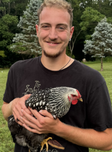
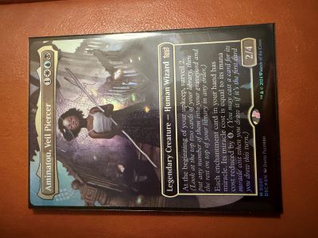

CellWatch
Web development and backend pipeline optimization built based on Quality of Coverage (QoC)
For this project I had some hands on experience with both javascript and python, as well as some minor adjustments to CSS.

I have a long standing interest in computers and their function that only continues to grow. Seeing and understanding all the behind the scenes bits and pieces of what makes this technology work is remarkable. In my time at MSU I have come to learn my passion lies in security. Cybercrime has only increased in recent years as technology advances and the spread of data online continues to reach immeasurable numbers. I hope to work in a field where I can not only challenge myself but work to create a positive impact through protecting peoples data and promoting the benefits of online security.
In a past year while attending Michigan State I worked with Loom Lab headed by Professor Morgan Vigil-Hayes from the College of Communication Arts and Sciences. During my time assisting Professor Vigil-Hayes, I helped with web development for CellWatch; an aggregation tool used to geographically represent the connectivity of broadband communications in direct comparison to the FCC's own broadband map. This tool's purpose is to present a verifiable way for internet users to be able to sumbit a challenge to the FCC in regard to their posted connectivity for a specific region. My role within the project was to implement a series of formulas which sought to aggregate and measure these connectivity KPIs based on stability and usability over space and time.
In my free time I am an avid player of Magic The Gathering and I enjoy spending time putting together new deck strategies. Being able to build new synergies of cards and finding different avenues of success is immensely gratifying. Putting it into practice within a live game is even more so. On other occasions, I like to dabble with music DAWs (Digital Audio Workstations) and drumming. While still a novice in terms of my drumming ability, having the knowledge does aid in my creative process when it comes to rhythm and drum arrangements digitally.

My current favorite commander card for Magic The Gathering
Web development and backend pipeline optimization built based on Quality of Coverage (QoC)
For this project I had some hands on experience with both javascript and python, as well as some minor adjustments to CSS.
coxjaso8@msu.edu